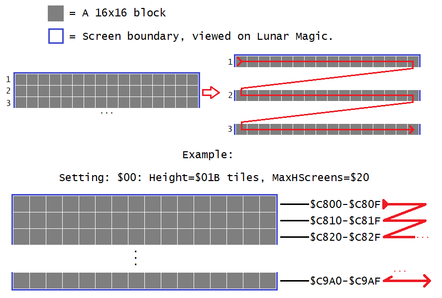
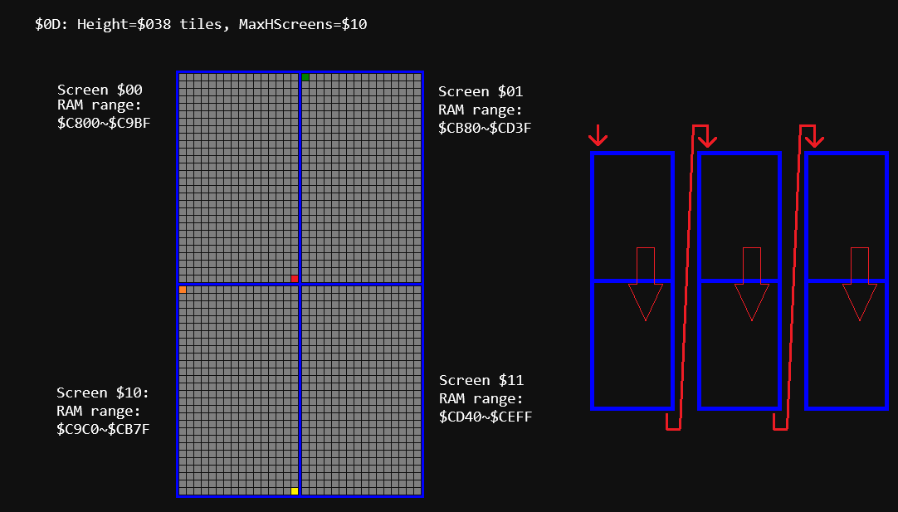
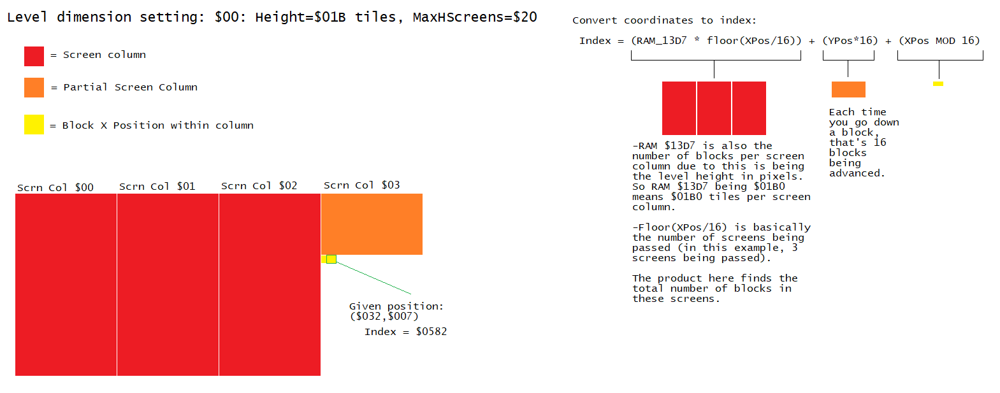
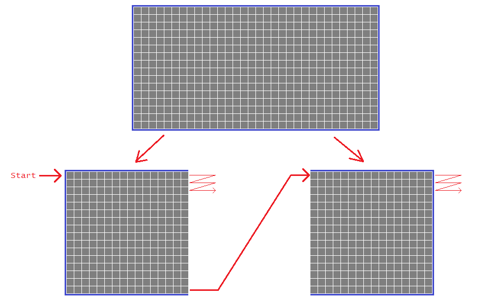
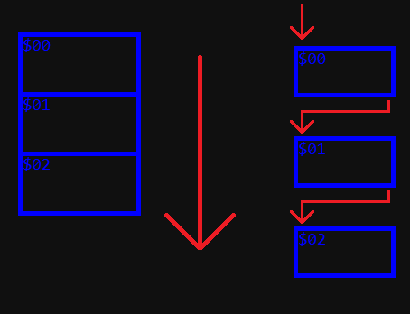
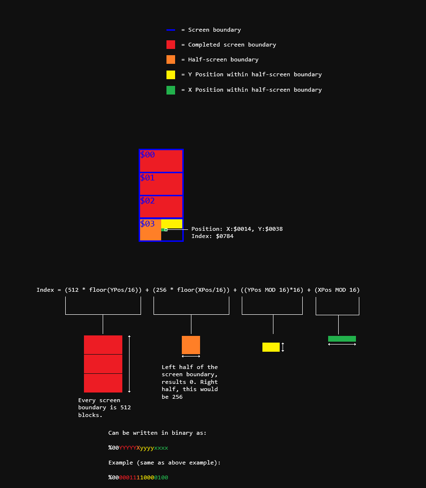
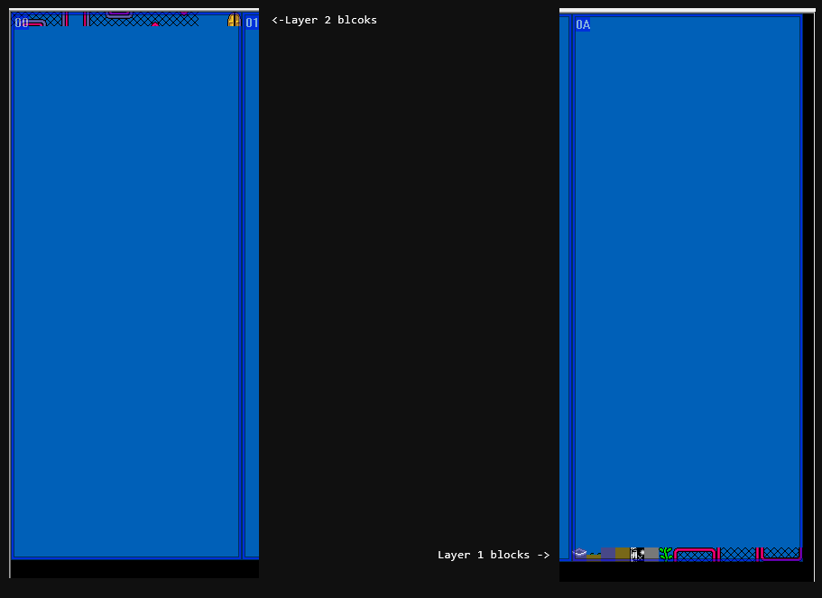
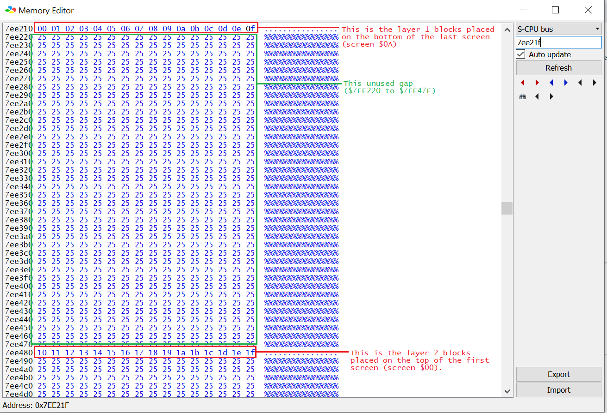

SMW's Level block format
In SMW's levels, RAM address $C800 in banks $7E/$7F ($40/$41 in SA-1) contains all the block data of layer 1 and 2
(if the level is a layer 2 level). They hold the map 16 number/ID for every tile in the current level with the low bytes in bank $7E ($40 SA-1)
and high bytes in bank $7F ($41 SA-1). The format of the blocks as follows:
Byte format
Because map16 numbers are 16-bit numbers (in the original SMW, they're technically 9-bits as page 0 and 1 are only used, but have to have another full byte due to being a table and that a byte
is the smallest addressable unit of memory), they have their low and high bytes stored separately in bank $7E ($40 for SA-1) for the low byte and bank $7F
($41 in SA-1) for the high byte. For example, if the first block stored in memory (top-left block on any level format) is $0130
(cement block), then $7EC800 ($40C800) would have a single byte saying $30 and $7FC800 ($41C800)'s byte saying $01.
Each next byte in both tables means each next block in the level:
|
| +0 ($C800) |
+1 ($C801) |
+2 ($C802) |
+3 ($C803) |
... |
| Bank $7E/$40 |
<FirstBlock_LowByte> |
<SecondBlock_LowByte> |
<ThirdBlock_LowByte> |
<FourthBlock_LowByte> |
... |
| Bank $7F/$41 |
<FirstBlock_HighByte> |
<SecondBlock_HighByte> |
<ThirdBlock_HighByte> |
<FourthBlock_HighByte> |
... |
Horizontal levels
- Within each screen column, each subsequent byte in memory starting at $C800 is the next block in level from left to right and then next row from left to right again (row-major):

- Once the bottom of the level is reached, the next screen column starting from the top-left and repeats the pattern. Note that this continues down the screen columns even if there
are multiple rows of screen boundaries and not the next “screen number” shown in Lunar Magic:

Calculating the coordinates and reverse.

- Formula to calculate to find the index is Index = (BlocksPerScrnCol * floor(XPos/16)) + (YPos*16) + (XPos MOD 16).
- Formula to calculate to find the coordinates is:
- XPos = (floor(BlockIndex/BlocksPerScreenCol)*16) + (Index MOD 16)
- YPos = floor((BlockIndex MOD BlocksPerScreenCol)/16)
BlocksPerScreenCol Is simply RAM address $13D7. This not only contains the level height in pixels, it is also the number of blocks
per screen column.
Vertical levels
- Similar to horizontal levels, but does the row-major format within each half (or every subscreen boundary) of the screen:

- Once the last block of the screen boundary is reached, it repeats the whole process on the next screen.

Calculating the coordinates and reverse.

- Similar to horizontal levels, but because there are no dimension settings for vertical levels, the task is much easier, and even more so thanks
to the fact that each screen's width and height and the number of blocks are all powers of 2, making easy use of bitwise operations. In fact, the index
in binary is %00YYYYYXyyyyxxxx, where uppercase X and Y represents what screen boundary and what halves (X = 0 for left and 1 for right)
within a screen boundary.
- Formula to calculate to find the index is Index = (512 * floor(YPos/16)) + (256 * floor(XPos/16)) + ((YPos MOD 16)*16) + (XPos MOD 16)
- To get the coordinates:
- XPos = (floor((BlockIndex MOD 512)/256)*16) + (BlockIndex MOD 16)
- YPos = (floor(BlockIndex/512)*16) + (floor(BlockIndex/16) MOD 16)
Other information
- When using Layer 2 (or layer 3) levels, the width of the level in horizontal levels or the height in vertical levels is halved, rounded downwards to
the nearest screen boundary. The other “half” (in quotes because it is not always exactly) of the $C800 table is used up by layer 2/3 in the
same data format order pattern as layer 1.
- If there is an odd number of H-screens, such as “$06: Height=$026 tiles, MaxHScreens=$17” on a layer 2 horizontal level, there
is a gap between the last byte of layer 1 and the first byte of layer 2 of a size equal to the number of blocks per screen column. For example of the mentioned setting:

I placed the blocks in an increasing map16 order, with layer 1 blocks on the bottom of the last screen and layer 2 on the first screen on the top so you can see
it easier when viewed on a debugger. Looking at memory editor we can see there is an unused gap:

Notice the gap ranging from $7EE220 to $7EE47F (this also applies to its next bank, $7F (or $41 in SA-1)). This gap is 608 ($260 in hex) bytes long, this is also
the number of blocks per screen column (16*38 = 608). This gap being the number of blocks per screen column bytes long always works when having any odd-number
of H-screens for a layer 2 level. It's unknown why Vitor Vilela/FuSoYa
they decided to position the layer 2 data table in such a position, probably due to the rounding of the number of screens downwards to an integer as odd numbers isn't
divisible by 2.
- If you write to the $C800 table, it does change the map16 number like you would with GPS's change_map16 routine, however, the graphics will not be updated until
it is refreshed by level loading (during the screen fades to the level) or when re-entering the player's screen after scrolled offscreen far enough. This is to prevent
V-blank overflow by updating the graphics only when necessary at the moment the block is changed during a map16 change routine (instead of writing to V-RAM's
tilemap and checking every block every frame). Thankfully, with UberasmTool, you can use the load: label feature so you can write to $C800 table before
the game process the block numbers to display their graphics. You can also safely change blocks during level mode after its loaded if you change the blocks that are outside the screen.